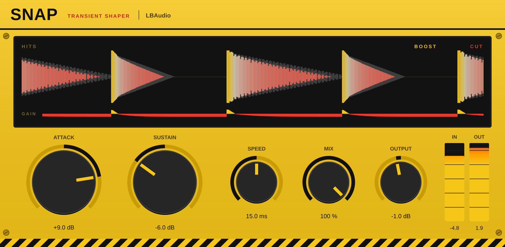

Transient shaper plugin · VST3 & AU
Snapby LBAudio
Make drums hit harder or sit back, and tighten or open up their tails, with two big knobs and every hit drawn on screen.
Instant download. Any local VAT is worked out at checkout. See all LBAudio plugins.
- VST3
- AU
- Windows
- macOS
- Linux
- Zero latency

Hear it on a real track
A beat by LBAudio, run through Snap at three settings. Each version is matched to the original's loudness, so you hear the shape of the hits, not a change in volume. Listen to the kick and snare as you switch.
Harder hits: the front of every kick and snare jumps out without the beat getting louder overall.
Watch it work
The real plugin on screen, on one of our tracks. Every before-and-after is matched in loudness, so you hear what Snap does, not a change in volume.
Shape every hit
The display draws each hit as it comes in, with a gain line underneath that shows where Snap boosts the front and trims or lifts the tail.
No threshold
Snap follows the shape of each hit, not its volume, so quiet ghost notes and loud accents get the same treatment.
Attack and sustain
Attack boosts or softens the front of each hit. Sustain lifts or shortens whatever rings on after it.
Parallel mix
Blend the shaped sound with the original for a more natural result.
The controls
Five controls. Double-click any knob to reset it, or click a value and type one in.
| Control | Range | What it does |
|---|---|---|
| Attack | ±15 dB | Boosts or softens the start of each hit. |
| Sustain | ±15 dB | Lifts or shortens the tail: the room, the ring and the decay. |
| Speed | 3 to 60 ms | How long the front of a hit counts as its attack. Short for click, longer for a fuller punch. |
| Mix | 0 to 100 % | Blends the shaped and original sound. |
| Output | ±12 dB | Level after everything else. |
Where to start
Four starting points. Set these, then adjust by ear.
-
Punchier kick
Attack +6 to +9 dB · speed 10–15 ms
A harder front on every kick, without making the beat louder overall.
-
Tighten a roomy snare
Attack +3 dB · sustain −6 to −10 dB
Pulls back the room and the ring for a short, dry snare.
-
Bigger, roomier drums
Attack −2 dB · sustain +5 to +8 dB
Brings up the room and the decay for a looser, bigger kit.
-
Soften a spiky pluck
Attack −4 to −6 dB · speed 5–8 ms
Rounds off sharp plucks and picked guitars so they sit back in the mix.
Specs
One download for each system. No iLok, no account and no activation.
- Formats
- VST3 on Windows, macOS and Linux. Audio Unit (AU) on macOS.
- Windows
- Windows 10 or later, 64-bit.
- macOS
- macOS 10.13 or later. Runs natively on Apple Silicon and Intel.
- Linux
- 64-bit x86 (x86-64).
- Hosts
- Any DAW that loads VST3 or AU plugins, such as Ableton Live, FL Studio, Cubase, Reaper, Studio One, Bitwig and Logic Pro. Not available for Pro Tools (AAX).
- Latency
- None: zero samples.
- Attack and sustain
- ±15 dB each.
- Detection
- Follows the shape of the sound, so there's no threshold to set.
- Channels
- Mono or stereo.
Questions
Anything else? Email support@lbaudio.co.uk.
How do I install it?
Unzip the download and copy Snap.vst3 into your VST3 folder: C:\Program Files\Common Files\VST3 on Windows or ~/Library/Audio/Plug-Ins/VST3 on a Mac. Logic users also copy Snap.component into ~/Library/Audio/Plug-Ins/Components. Then rescan plugins in your DAW. The zip includes these steps in INSTALL.txt.
How many computers can I use it on?
All the computers you personally own or use. See the licence agreement for the details.
Can I use it on commercial releases?
Yes. The music you make with Snap is entirely yours, with no royalties or credits owed.
Do updates cost anything?
No. Updates to Snap version 1 are free for everyone who bought it.
What if it doesn't work on my system?
Get in touch within 14 days of buying. If we can't get it working, you get a full refund. See the refund policy.
Does it work in Pro Tools?
Not yet. Pro Tools only loads AAX plugins, and Snap is VST3 and AU.
Isn't this just a compressor?
No. A compressor reacts to how loud the signal is. Snap reacts to how quickly it's changing, so every hit is shaped the same way, however loud it is.
Snap
VST3 & AU for Windows, macOS and Linux. Instant download. See all LBAudio plugins.